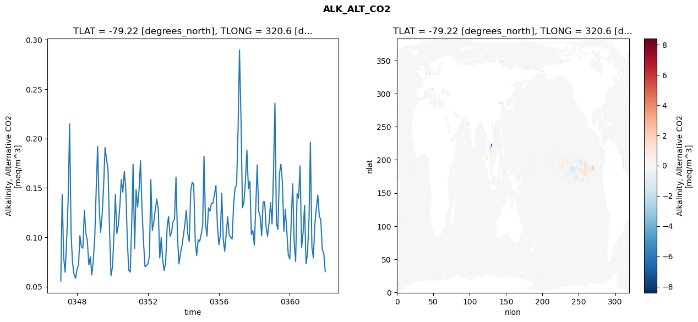
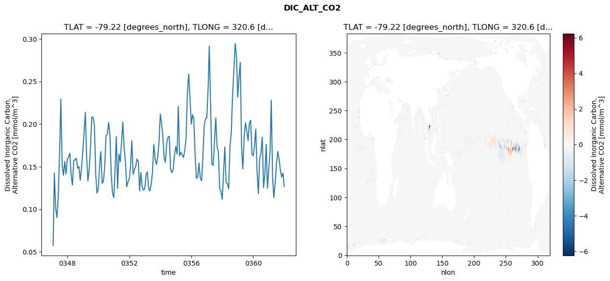
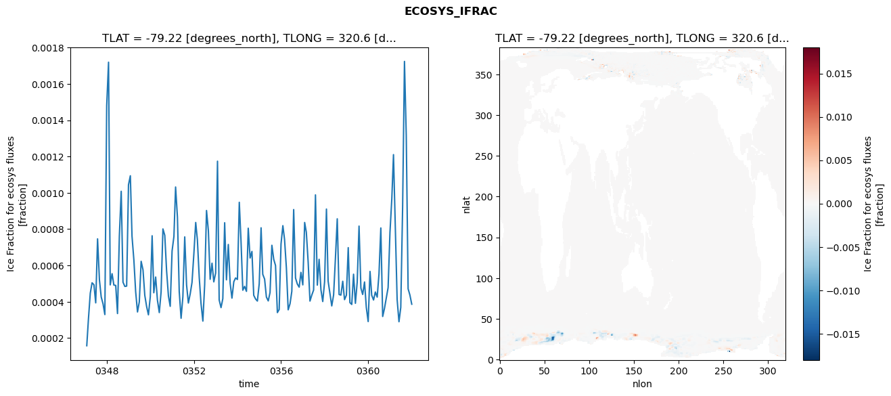
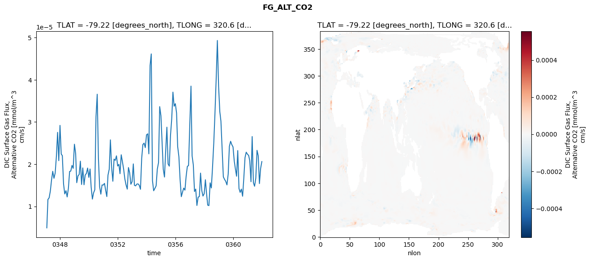

glb-dor_North_Atlantic_basin_020_1999-01-01_00080#
Simulation details#
Case: smyle.cdr-atlas-v0.glb-dor_North_Atlantic_basin_020_1999-01-01_00080.001
Basin: North_Atlantic_basin
Polygon: 20.0
Start date: 1999-01
Show code cell source Hide code cell source
import xarray as xr
import matplotlib.pyplot as plt
Show code cell source Hide code cell source
zarr_store = "/path/to/zarr/store"
# Parameters
zarr_store = "/global/cfs/projectdirs/m4746/Projects/Ocean-CDR-Atlas-v0/data/validation/smyle.cdr-atlas-v0.glb-dor_North_Atlantic_basin_020_1999-01-01_00080.001.validation.zarr"
Show code cell source Hide code cell source
%%time
ds_o = xr.open_zarr(zarr_store).compute()
ds_o
CPU times: user 713 ms, sys: 427 ms, total: 1.14 s
Wall time: 1.4 s
<xarray.Dataset> Size: 2MB
Dimensions: (nlat: 384, nlon: 320, time: 180)
Coordinates:
TLAT float64 8B -79.22
TLONG float64 8B 320.6
ULAT float64 8B -78.95
ULONG float64 8B 321.1
* time (time) object 1kB 0347-02-01 00:00:00 ... 0362-01-01 0...
z_t float32 4B 500.0
Dimensions without coordinates: nlat, nlon
Data variables:
ALK_ALT_CO2_diff (nlat, nlon) float32 492kB nan nan nan ... nan nan nan
ALK_ALT_CO2_rmse (time) float64 1kB 0.05549 0.143 ... 0.08407 0.06508
DIC_ALT_CO2_diff (nlat, nlon) float32 492kB nan nan nan ... nan nan nan
DIC_ALT_CO2_rmse (time) float64 1kB 0.05768 0.1424 ... 0.1427 0.1267
ECOSYS_IFRAC_diff (nlat, nlon) float32 492kB nan nan nan ... nan nan nan
ECOSYS_IFRAC_rmse (time) float64 1kB 0.0001578 0.0003046 ... 0.0003864
FG_ALT_CO2_diff (nlat, nlon) float32 492kB nan nan nan ... nan nan nan
FG_ALT_CO2_rmse (time) float64 1kB 4.929e-06 1.165e-05 ... 2.062e-05xarray.Dataset
- nlat: 384
- nlon: 320
- time: 180
- TLAT()float64-79.22
- long_name :
- array of t-grid latitudes
- units :
- degrees_north
array(-79.22052261)
- TLONG()float64320.6
- long_name :
- array of t-grid longitudes
- units :
- degrees_east
array(320.56250892)
- ULAT()float64-78.95
- long_name :
- array of u-grid latitudes
- units :
- degrees_north
array(-78.95289509)
- ULONG()float64321.1
- long_name :
- array of u-grid longitudes
- units :
- degrees_east
array(321.12500894)
- time(time)object0347-02-01 00:00:00 ... 0362-01-...
- bounds :
- time_bound
- long_name :
- time
array([cftime.DatetimeNoLeap(347, 2, 1, 0, 0, 0, 0, has_year_zero=True), cftime.DatetimeNoLeap(347, 3, 1, 0, 0, 0, 0, has_year_zero=True), cftime.DatetimeNoLeap(347, 4, 1, 0, 0, 0, 0, has_year_zero=True), cftime.DatetimeNoLeap(347, 5, 1, 0, 0, 0, 0, has_year_zero=True), cftime.DatetimeNoLeap(347, 6, 1, 0, 0, 0, 0, has_year_zero=True), cftime.DatetimeNoLeap(347, 7, 1, 0, 0, 0, 0, has_year_zero=True), cftime.DatetimeNoLeap(347, 8, 1, 0, 0, 0, 0, has_year_zero=True), cftime.DatetimeNoLeap(347, 9, 1, 0, 0, 0, 0, has_year_zero=True), cftime.DatetimeNoLeap(347, 10, 1, 0, 0, 0, 0, has_year_zero=True), cftime.DatetimeNoLeap(347, 11, 1, 0, 0, 0, 0, has_year_zero=True), cftime.DatetimeNoLeap(347, 12, 1, 0, 0, 0, 0, has_year_zero=True), cftime.DatetimeNoLeap(348, 1, 1, 0, 0, 0, 0, has_year_zero=True), cftime.DatetimeNoLeap(348, 2, 1, 0, 0, 0, 0, has_year_zero=True), cftime.DatetimeNoLeap(348, 3, 1, 0, 0, 0, 0, has_year_zero=True), cftime.DatetimeNoLeap(348, 4, 1, 0, 0, 0, 0, has_year_zero=True), cftime.DatetimeNoLeap(348, 5, 1, 0, 0, 0, 0, has_year_zero=True), cftime.DatetimeNoLeap(348, 6, 1, 0, 0, 0, 0, has_year_zero=True), cftime.DatetimeNoLeap(348, 7, 1, 0, 0, 0, 0, has_year_zero=True), cftime.DatetimeNoLeap(348, 8, 1, 0, 0, 0, 0, has_year_zero=True), cftime.DatetimeNoLeap(348, 9, 1, 0, 0, 0, 0, has_year_zero=True), cftime.DatetimeNoLeap(348, 10, 1, 0, 0, 0, 0, has_year_zero=True), cftime.DatetimeNoLeap(348, 11, 1, 0, 0, 0, 0, has_year_zero=True), cftime.DatetimeNoLeap(348, 12, 1, 0, 0, 0, 0, has_year_zero=True), cftime.DatetimeNoLeap(349, 1, 1, 0, 0, 0, 0, has_year_zero=True), cftime.DatetimeNoLeap(349, 2, 1, 0, 0, 0, 0, has_year_zero=True), cftime.DatetimeNoLeap(349, 3, 1, 0, 0, 0, 0, has_year_zero=True), cftime.DatetimeNoLeap(349, 4, 1, 0, 0, 0, 0, has_year_zero=True), cftime.DatetimeNoLeap(349, 5, 1, 0, 0, 0, 0, has_year_zero=True), cftime.DatetimeNoLeap(349, 6, 1, 0, 0, 0, 0, has_year_zero=True), cftime.DatetimeNoLeap(349, 7, 1, 0, 0, 0, 0, has_year_zero=True), cftime.DatetimeNoLeap(349, 8, 1, 0, 0, 0, 0, has_year_zero=True), cftime.DatetimeNoLeap(349, 9, 1, 0, 0, 0, 0, has_year_zero=True), cftime.DatetimeNoLeap(349, 10, 1, 0, 0, 0, 0, has_year_zero=True), cftime.DatetimeNoLeap(349, 11, 1, 0, 0, 0, 0, has_year_zero=True), cftime.DatetimeNoLeap(349, 12, 1, 0, 0, 0, 0, has_year_zero=True), cftime.DatetimeNoLeap(350, 1, 1, 0, 0, 0, 0, has_year_zero=True), cftime.DatetimeNoLeap(350, 2, 1, 0, 0, 0, 0, has_year_zero=True), cftime.DatetimeNoLeap(350, 3, 1, 0, 0, 0, 0, has_year_zero=True), cftime.DatetimeNoLeap(350, 4, 1, 0, 0, 0, 0, has_year_zero=True), cftime.DatetimeNoLeap(350, 5, 1, 0, 0, 0, 0, has_year_zero=True), cftime.DatetimeNoLeap(350, 6, 1, 0, 0, 0, 0, has_year_zero=True), cftime.DatetimeNoLeap(350, 7, 1, 0, 0, 0, 0, has_year_zero=True), cftime.DatetimeNoLeap(350, 8, 1, 0, 0, 0, 0, has_year_zero=True), cftime.DatetimeNoLeap(350, 9, 1, 0, 0, 0, 0, has_year_zero=True), cftime.DatetimeNoLeap(350, 10, 1, 0, 0, 0, 0, has_year_zero=True), cftime.DatetimeNoLeap(350, 11, 1, 0, 0, 0, 0, has_year_zero=True), cftime.DatetimeNoLeap(350, 12, 1, 0, 0, 0, 0, has_year_zero=True), cftime.DatetimeNoLeap(351, 1, 1, 0, 0, 0, 0, has_year_zero=True), cftime.DatetimeNoLeap(351, 2, 1, 0, 0, 0, 0, has_year_zero=True), cftime.DatetimeNoLeap(351, 3, 1, 0, 0, 0, 0, has_year_zero=True), cftime.DatetimeNoLeap(351, 4, 1, 0, 0, 0, 0, has_year_zero=True), cftime.DatetimeNoLeap(351, 5, 1, 0, 0, 0, 0, has_year_zero=True), cftime.DatetimeNoLeap(351, 6, 1, 0, 0, 0, 0, has_year_zero=True), cftime.DatetimeNoLeap(351, 7, 1, 0, 0, 0, 0, has_year_zero=True), cftime.DatetimeNoLeap(351, 8, 1, 0, 0, 0, 0, has_year_zero=True), cftime.DatetimeNoLeap(351, 9, 1, 0, 0, 0, 0, has_year_zero=True), cftime.DatetimeNoLeap(351, 10, 1, 0, 0, 0, 0, has_year_zero=True), cftime.DatetimeNoLeap(351, 11, 1, 0, 0, 0, 0, has_year_zero=True), cftime.DatetimeNoLeap(351, 12, 1, 0, 0, 0, 0, has_year_zero=True), cftime.DatetimeNoLeap(352, 1, 1, 0, 0, 0, 0, has_year_zero=True), cftime.DatetimeNoLeap(352, 2, 1, 0, 0, 0, 0, has_year_zero=True), cftime.DatetimeNoLeap(352, 3, 1, 0, 0, 0, 0, has_year_zero=True), cftime.DatetimeNoLeap(352, 4, 1, 0, 0, 0, 0, has_year_zero=True), cftime.DatetimeNoLeap(352, 5, 1, 0, 0, 0, 0, has_year_zero=True), cftime.DatetimeNoLeap(352, 6, 1, 0, 0, 0, 0, has_year_zero=True), cftime.DatetimeNoLeap(352, 7, 1, 0, 0, 0, 0, has_year_zero=True), cftime.DatetimeNoLeap(352, 8, 1, 0, 0, 0, 0, has_year_zero=True), cftime.DatetimeNoLeap(352, 9, 1, 0, 0, 0, 0, has_year_zero=True), cftime.DatetimeNoLeap(352, 10, 1, 0, 0, 0, 0, has_year_zero=True), cftime.DatetimeNoLeap(352, 11, 1, 0, 0, 0, 0, has_year_zero=True), cftime.DatetimeNoLeap(352, 12, 1, 0, 0, 0, 0, has_year_zero=True), cftime.DatetimeNoLeap(353, 1, 1, 0, 0, 0, 0, has_year_zero=True), cftime.DatetimeNoLeap(353, 2, 1, 0, 0, 0, 0, has_year_zero=True), cftime.DatetimeNoLeap(353, 3, 1, 0, 0, 0, 0, has_year_zero=True), cftime.DatetimeNoLeap(353, 4, 1, 0, 0, 0, 0, has_year_zero=True), cftime.DatetimeNoLeap(353, 5, 1, 0, 0, 0, 0, has_year_zero=True), cftime.DatetimeNoLeap(353, 6, 1, 0, 0, 0, 0, has_year_zero=True), cftime.DatetimeNoLeap(353, 7, 1, 0, 0, 0, 0, has_year_zero=True), cftime.DatetimeNoLeap(353, 8, 1, 0, 0, 0, 0, has_year_zero=True), cftime.DatetimeNoLeap(353, 9, 1, 0, 0, 0, 0, has_year_zero=True), cftime.DatetimeNoLeap(353, 10, 1, 0, 0, 0, 0, has_year_zero=True), cftime.DatetimeNoLeap(353, 11, 1, 0, 0, 0, 0, has_year_zero=True), cftime.DatetimeNoLeap(353, 12, 1, 0, 0, 0, 0, has_year_zero=True), cftime.DatetimeNoLeap(354, 1, 1, 0, 0, 0, 0, has_year_zero=True), cftime.DatetimeNoLeap(354, 2, 1, 0, 0, 0, 0, has_year_zero=True), cftime.DatetimeNoLeap(354, 3, 1, 0, 0, 0, 0, has_year_zero=True), cftime.DatetimeNoLeap(354, 4, 1, 0, 0, 0, 0, has_year_zero=True), cftime.DatetimeNoLeap(354, 5, 1, 0, 0, 0, 0, has_year_zero=True), cftime.DatetimeNoLeap(354, 6, 1, 0, 0, 0, 0, has_year_zero=True), cftime.DatetimeNoLeap(354, 7, 1, 0, 0, 0, 0, has_year_zero=True), cftime.DatetimeNoLeap(354, 8, 1, 0, 0, 0, 0, has_year_zero=True), cftime.DatetimeNoLeap(354, 9, 1, 0, 0, 0, 0, has_year_zero=True), cftime.DatetimeNoLeap(354, 10, 1, 0, 0, 0, 0, has_year_zero=True), cftime.DatetimeNoLeap(354, 11, 1, 0, 0, 0, 0, has_year_zero=True), cftime.DatetimeNoLeap(354, 12, 1, 0, 0, 0, 0, has_year_zero=True), cftime.DatetimeNoLeap(355, 1, 1, 0, 0, 0, 0, has_year_zero=True), cftime.DatetimeNoLeap(355, 2, 1, 0, 0, 0, 0, has_year_zero=True), cftime.DatetimeNoLeap(355, 3, 1, 0, 0, 0, 0, has_year_zero=True), cftime.DatetimeNoLeap(355, 4, 1, 0, 0, 0, 0, has_year_zero=True), cftime.DatetimeNoLeap(355, 5, 1, 0, 0, 0, 0, has_year_zero=True), cftime.DatetimeNoLeap(355, 6, 1, 0, 0, 0, 0, has_year_zero=True), cftime.DatetimeNoLeap(355, 7, 1, 0, 0, 0, 0, has_year_zero=True), cftime.DatetimeNoLeap(355, 8, 1, 0, 0, 0, 0, has_year_zero=True), cftime.DatetimeNoLeap(355, 9, 1, 0, 0, 0, 0, has_year_zero=True), cftime.DatetimeNoLeap(355, 10, 1, 0, 0, 0, 0, has_year_zero=True), cftime.DatetimeNoLeap(355, 11, 1, 0, 0, 0, 0, has_year_zero=True), cftime.DatetimeNoLeap(355, 12, 1, 0, 0, 0, 0, has_year_zero=True), cftime.DatetimeNoLeap(356, 1, 1, 0, 0, 0, 0, has_year_zero=True), cftime.DatetimeNoLeap(356, 2, 1, 0, 0, 0, 0, has_year_zero=True), cftime.DatetimeNoLeap(356, 3, 1, 0, 0, 0, 0, has_year_zero=True), cftime.DatetimeNoLeap(356, 4, 1, 0, 0, 0, 0, has_year_zero=True), cftime.DatetimeNoLeap(356, 5, 1, 0, 0, 0, 0, has_year_zero=True), cftime.DatetimeNoLeap(356, 6, 1, 0, 0, 0, 0, has_year_zero=True), cftime.DatetimeNoLeap(356, 7, 1, 0, 0, 0, 0, has_year_zero=True), cftime.DatetimeNoLeap(356, 8, 1, 0, 0, 0, 0, has_year_zero=True), cftime.DatetimeNoLeap(356, 9, 1, 0, 0, 0, 0, has_year_zero=True), cftime.DatetimeNoLeap(356, 10, 1, 0, 0, 0, 0, has_year_zero=True), cftime.DatetimeNoLeap(356, 11, 1, 0, 0, 0, 0, has_year_zero=True), cftime.DatetimeNoLeap(356, 12, 1, 0, 0, 0, 0, has_year_zero=True), cftime.DatetimeNoLeap(357, 1, 1, 0, 0, 0, 0, has_year_zero=True), cftime.DatetimeNoLeap(357, 2, 1, 0, 0, 0, 0, has_year_zero=True), cftime.DatetimeNoLeap(357, 3, 1, 0, 0, 0, 0, has_year_zero=True), cftime.DatetimeNoLeap(357, 4, 1, 0, 0, 0, 0, has_year_zero=True), cftime.DatetimeNoLeap(357, 5, 1, 0, 0, 0, 0, has_year_zero=True), cftime.DatetimeNoLeap(357, 6, 1, 0, 0, 0, 0, has_year_zero=True), cftime.DatetimeNoLeap(357, 7, 1, 0, 0, 0, 0, has_year_zero=True), cftime.DatetimeNoLeap(357, 8, 1, 0, 0, 0, 0, has_year_zero=True), cftime.DatetimeNoLeap(357, 9, 1, 0, 0, 0, 0, has_year_zero=True), cftime.DatetimeNoLeap(357, 10, 1, 0, 0, 0, 0, has_year_zero=True), cftime.DatetimeNoLeap(357, 11, 1, 0, 0, 0, 0, has_year_zero=True), cftime.DatetimeNoLeap(357, 12, 1, 0, 0, 0, 0, has_year_zero=True), cftime.DatetimeNoLeap(358, 1, 1, 0, 0, 0, 0, has_year_zero=True), cftime.DatetimeNoLeap(358, 2, 1, 0, 0, 0, 0, has_year_zero=True), cftime.DatetimeNoLeap(358, 3, 1, 0, 0, 0, 0, has_year_zero=True), cftime.DatetimeNoLeap(358, 4, 1, 0, 0, 0, 0, has_year_zero=True), cftime.DatetimeNoLeap(358, 5, 1, 0, 0, 0, 0, has_year_zero=True), cftime.DatetimeNoLeap(358, 6, 1, 0, 0, 0, 0, has_year_zero=True), cftime.DatetimeNoLeap(358, 7, 1, 0, 0, 0, 0, has_year_zero=True), cftime.DatetimeNoLeap(358, 8, 1, 0, 0, 0, 0, has_year_zero=True), cftime.DatetimeNoLeap(358, 9, 1, 0, 0, 0, 0, has_year_zero=True), cftime.DatetimeNoLeap(358, 10, 1, 0, 0, 0, 0, has_year_zero=True), cftime.DatetimeNoLeap(358, 11, 1, 0, 0, 0, 0, has_year_zero=True), cftime.DatetimeNoLeap(358, 12, 1, 0, 0, 0, 0, has_year_zero=True), cftime.DatetimeNoLeap(359, 1, 1, 0, 0, 0, 0, has_year_zero=True), cftime.DatetimeNoLeap(359, 2, 1, 0, 0, 0, 0, has_year_zero=True), cftime.DatetimeNoLeap(359, 3, 1, 0, 0, 0, 0, has_year_zero=True), cftime.DatetimeNoLeap(359, 4, 1, 0, 0, 0, 0, has_year_zero=True), cftime.DatetimeNoLeap(359, 5, 1, 0, 0, 0, 0, has_year_zero=True), cftime.DatetimeNoLeap(359, 6, 1, 0, 0, 0, 0, has_year_zero=True), cftime.DatetimeNoLeap(359, 7, 1, 0, 0, 0, 0, has_year_zero=True), cftime.DatetimeNoLeap(359, 8, 1, 0, 0, 0, 0, has_year_zero=True), cftime.DatetimeNoLeap(359, 9, 1, 0, 0, 0, 0, has_year_zero=True), cftime.DatetimeNoLeap(359, 10, 1, 0, 0, 0, 0, has_year_zero=True), cftime.DatetimeNoLeap(359, 11, 1, 0, 0, 0, 0, has_year_zero=True), cftime.DatetimeNoLeap(359, 12, 1, 0, 0, 0, 0, has_year_zero=True), cftime.DatetimeNoLeap(360, 1, 1, 0, 0, 0, 0, has_year_zero=True), cftime.DatetimeNoLeap(360, 2, 1, 0, 0, 0, 0, has_year_zero=True), cftime.DatetimeNoLeap(360, 3, 1, 0, 0, 0, 0, has_year_zero=True), cftime.DatetimeNoLeap(360, 4, 1, 0, 0, 0, 0, has_year_zero=True), cftime.DatetimeNoLeap(360, 5, 1, 0, 0, 0, 0, has_year_zero=True), cftime.DatetimeNoLeap(360, 6, 1, 0, 0, 0, 0, has_year_zero=True), cftime.DatetimeNoLeap(360, 7, 1, 0, 0, 0, 0, has_year_zero=True), cftime.DatetimeNoLeap(360, 8, 1, 0, 0, 0, 0, has_year_zero=True), cftime.DatetimeNoLeap(360, 9, 1, 0, 0, 0, 0, has_year_zero=True), cftime.DatetimeNoLeap(360, 10, 1, 0, 0, 0, 0, has_year_zero=True), cftime.DatetimeNoLeap(360, 11, 1, 0, 0, 0, 0, has_year_zero=True), cftime.DatetimeNoLeap(360, 12, 1, 0, 0, 0, 0, has_year_zero=True), cftime.DatetimeNoLeap(361, 1, 1, 0, 0, 0, 0, has_year_zero=True), cftime.DatetimeNoLeap(361, 2, 1, 0, 0, 0, 0, has_year_zero=True), cftime.DatetimeNoLeap(361, 3, 1, 0, 0, 0, 0, has_year_zero=True), cftime.DatetimeNoLeap(361, 4, 1, 0, 0, 0, 0, has_year_zero=True), cftime.DatetimeNoLeap(361, 5, 1, 0, 0, 0, 0, has_year_zero=True), cftime.DatetimeNoLeap(361, 6, 1, 0, 0, 0, 0, has_year_zero=True), cftime.DatetimeNoLeap(361, 7, 1, 0, 0, 0, 0, has_year_zero=True), cftime.DatetimeNoLeap(361, 8, 1, 0, 0, 0, 0, has_year_zero=True), cftime.DatetimeNoLeap(361, 9, 1, 0, 0, 0, 0, has_year_zero=True), cftime.DatetimeNoLeap(361, 10, 1, 0, 0, 0, 0, has_year_zero=True), cftime.DatetimeNoLeap(361, 11, 1, 0, 0, 0, 0, has_year_zero=True), cftime.DatetimeNoLeap(361, 12, 1, 0, 0, 0, 0, has_year_zero=True), cftime.DatetimeNoLeap(362, 1, 1, 0, 0, 0, 0, has_year_zero=True)], dtype=object) - z_t()float32500.0
- long_name :
- depth from surface to midpoint of layer
- positive :
- down
- units :
- centimeters
- valid_max :
- 537500.0
- valid_min :
- 500.0
array(500., dtype=float32)
- ALK_ALT_CO2_diff(nlat, nlon)float32nan nan nan nan ... nan nan nan nan
- cell_methods :
- time: mean
- grid_loc :
- 3111
- long_name :
- Alkalinity, Alternative CO2
- units :
- meq/m^3
array([[ nan, nan, nan, ..., nan, nan, nan], [ nan, nan, nan, ..., nan, nan, nan], [0.00561523, 0. , 0.00756836, ..., nan, nan, nan], ..., [ nan, nan, nan, ..., nan, nan, nan], [ nan, nan, nan, ..., nan, nan, nan], [ nan, nan, nan, ..., nan, nan, nan]], dtype=float32) - ALK_ALT_CO2_rmse(time)float640.05549 0.143 ... 0.08407 0.06508
- cell_methods :
- time: mean
- grid_loc :
- 3111
- long_name :
- Alkalinity, Alternative CO2
- units :
- meq/m^3
array([0.05549116, 0.14299441, 0.07925363, 0.06451172, 0.09627095, 0.13615513, 0.21483235, 0.10216537, 0.07362244, 0.06235715, 0.05831213, 0.06778922, 0.07125541, 0.10163587, 0.09025899, 0.08880321, 0.12704557, 0.10445062, 0.09607738, 0.07195137, 0.08013111, 0.06174451, 0.07578817, 0.100046 , 0.15125643, 0.19204392, 0.13118658, 0.10498262, 0.12224922, 0.15032845, 0.19088573, 0.17876652, 0.16837527, 0.1074681 , 0.06116525, 0.07005923, 0.10281979, 0.14311765, 0.1036992 , 0.11232485, 0.13123955, 0.1583784 , 0.14564131, 0.16643139, 0.1501451 , 0.09863129, 0.06650187, 0.06466708, 0.11460616, 0.17408144, 0.08852356, 0.14812459, 0.13061221, 0.1474566 , 0.17748697, 0.12819351, 0.09570456, 0.07021167, 0.0712917 , 0.07315815, 0.08123318, 0.15831229, 0.10686562, 0.11543614, 0.1276579 , 0.13874791, 0.12851678, 0.07893807, 0.09958243, 0.07656977, 0.06619002, 0.07495131, 0.11120492, 0.12096143, 0.10096136, 0.10468542, 0.11581045, 0.11811332, 0.16088969, 0.10072124, 0.07285914, 0.08348584, 0.09090456, 0.10182982, 0.11334653, 0.12728136, 0.10299504, 0.09579053, 0.14706396, 0.15554558, 0.15366765, 0.09590692, 0.08150449, 0.09732468, 0.09562872, 0.10275178, 0.1118053 , 0.18212796, 0.11398162, 0.10106587, 0.12973593, 0.12638398, 0.13432994, 0.13423632, 0.14331386, 0.15228351, 0.11230255, 0.09243862, 0.10268883, 0.14447647, 0.09781226, 0.08566243, 0.10360275, 0.12059088, 0.10246766, 0.10006954, 0.09816168, 0.13377914, 0.15012369, 0.15279336, 0.21137499, 0.28978035, 0.22151147, 0.1298524 , 0.1350802 , 0.15676166, 0.18815632, 0.14927489, 0.15677714, 0.10259244, 0.10674047, 0.09196959, 0.1327791 , 0.17323983, 0.12639439, 0.1212207 , 0.10144693, 0.13577591, 0.13596477, 0.10986105, 0.10093192, 0.11494204, 0.13500686, 0.11348067, 0.16932147, 0.23582008, 0.11429125, 0.10781911, 0.1638966 , 0.17401398, 0.15655059, 0.10588302, 0.12807461, 0.10564993, 0.08222403, 0.07790473, 0.11744462, 0.1540495 , 0.09469674, 0.07548168, 0.1441546 , 0.13955409, 0.17223715, 0.08938572, 0.10455236, 0.13224134, 0.07307216, 0.08360316, 0.11926388, 0.19628421, 0.08991179, 0.07900161, 0.11315652, 0.12911978, 0.14267751, 0.12128716, 0.11764663, 0.08709105, 0.08406653, 0.06507558]) - DIC_ALT_CO2_diff(nlat, nlon)float32nan nan nan nan ... nan nan nan nan
- cell_methods :
- time: mean
- grid_loc :
- 3111
- long_name :
- Dissolved Inorganic Carbon, Alternative CO2
- units :
- mmol/m^3
array([[ nan, nan, nan, ..., nan, nan, nan], [ nan, nan, nan, ..., nan, nan, nan], [0.0090332 , 0.01245117, 0.02172852, ..., nan, nan, nan], ..., [ nan, nan, nan, ..., nan, nan, nan], [ nan, nan, nan, ..., nan, nan, nan], [ nan, nan, nan, ..., nan, nan, nan]], dtype=float32) - DIC_ALT_CO2_rmse(time)float640.05768 0.1424 ... 0.1427 0.1267
- cell_methods :
- time: mean
- grid_loc :
- 3111
- long_name :
- Dissolved Inorganic Carbon, Alternative CO2
- units :
- mmol/m^3
array([0.05768388, 0.1424365 , 0.10132815, 0.09020191, 0.11529633, 0.16264867, 0.22936445, 0.15178829, 0.13983381, 0.15622457, 0.14136788, 0.15857798, 0.16163892, 0.1658602 , 0.14023686, 0.12826097, 0.15767785, 0.15793268, 0.15984588, 0.14814063, 0.15011281, 0.13409733, 0.14828322, 0.16860164, 0.19116837, 0.21393231, 0.16153713, 0.13328914, 0.14722088, 0.17342639, 0.20841638, 0.20805181, 0.19794316, 0.14141302, 0.1189447 , 0.12392413, 0.15213978, 0.16770072, 0.13041401, 0.13279872, 0.1502123 , 0.18617948, 0.18820852, 0.20181115, 0.1868437 , 0.14149327, 0.11868612, 0.11378954, 0.14774162, 0.18538762, 0.12465903, 0.16484229, 0.15575159, 0.17814958, 0.20228723, 0.17179966, 0.15625672, 0.12639725, 0.13204297, 0.13589558, 0.15177017, 0.18059659, 0.14086472, 0.14642253, 0.15048977, 0.1589499 , 0.15638223, 0.12158979, 0.14325743, 0.12594119, 0.12253336, 0.12443698, 0.14076786, 0.14401499, 0.12469331, 0.12181016, 0.1295125 , 0.14377467, 0.17611452, 0.15922755, 0.15254801, 0.16085431, 0.17839514, 0.21181086, 0.19993691, 0.18660849, 0.16098656, 0.15517142, 0.17733994, 0.18468013, 0.18548436, 0.14618169, 0.14292955, 0.14701142, 0.1631889 , 0.17377694, 0.16461792, 0.22084368, 0.16266677, 0.16690835, 0.16381677, 0.16083703, 0.16938781, 0.18374623, 0.23642266, 0.25872429, 0.23112079, 0.19993541, 0.21114645, 0.2055708 , 0.16451889, 0.13641865, 0.13806052, 0.15439235, 0.1365531 , 0.13349987, 0.16115681, 0.1977063 , 0.20616381, 0.20696132, 0.24129383, 0.29154276, 0.22231069, 0.15328294, 0.1515528 , 0.17944842, 0.20734702, 0.17351474, 0.16695985, 0.12433859, 0.12094126, 0.11176742, 0.14349467, 0.17311612, 0.13131681, 0.12999044, 0.12422359, 0.17314286, 0.19001711, 0.23461536, 0.2624999 , 0.29454868, 0.27968474, 0.2315693 , 0.25606972, 0.27249939, 0.1727289 , 0.14726968, 0.18509081, 0.20144641, 0.19230955, 0.18066194, 0.20082738, 0.20449757, 0.16484479, 0.16289403, 0.1751669 , 0.1941121 , 0.14428658, 0.11852466, 0.16016409, 0.1656016 , 0.1846444 , 0.12552295, 0.14068201, 0.17612724, 0.12456396, 0.14658652, 0.16869393, 0.22818229, 0.13750577, 0.11375523, 0.13079323, 0.15321406, 0.16777006, 0.15923706, 0.14623288, 0.13786879, 0.1426756 , 0.12673639]) - ECOSYS_IFRAC_diff(nlat, nlon)float32nan nan nan nan ... nan nan nan nan
- cell_methods :
- time: mean
- grid_loc :
- 2110
- long_name :
- Ice Fraction for ecosys fluxes
- units :
- fraction
array([[ nan, nan, nan, ..., nan, nan, nan], [ nan, nan, nan, ..., nan, nan, nan], [ 2.889037e-04, -8.571148e-05, -1.116395e-04, ..., nan, nan, nan], ..., [ nan, nan, nan, ..., nan, nan, nan], [ nan, nan, nan, ..., nan, nan, nan], [ nan, nan, nan, ..., nan, nan, nan]], dtype=float32) - ECOSYS_IFRAC_rmse(time)float640.0001578 0.0003046 ... 0.0003864
- cell_methods :
- time: mean
- grid_loc :
- 2110
- long_name :
- Ice Fraction for ecosys fluxes
- units :
- fraction
array([0.00015783, 0.00030456, 0.00044746, 0.00050433, 0.00049382, 0.00039393, 0.00074635, 0.0005209 , 0.0004262 , 0.00038799, 0.00032944, 0.00148031, 0.00171919, 0.00049299, 0.0005544 , 0.00049199, 0.00048994, 0.00033505, 0.00076166, 0.00100833, 0.0005076 , 0.00048439, 0.00048621, 0.00104402, 0.00109376, 0.00076069, 0.00063062, 0.00045545, 0.0003438 , 0.00039898, 0.0006226 , 0.00057574, 0.00043531, 0.00037291, 0.00032813, 0.00042757, 0.0007633 , 0.00044956, 0.00053602, 0.00040856, 0.00034041, 0.00045366, 0.00080094, 0.00076562, 0.00057193, 0.00043196, 0.00037487, 0.0006792 , 0.00075959, 0.00103188, 0.0008653 , 0.00045632, 0.00030906, 0.00042788, 0.00075704, 0.00049236, 0.00039305, 0.00044402, 0.00050623, 0.00066332, 0.00083648, 0.00074104, 0.00053412, 0.00039002, 0.00029343, 0.00049314, 0.00090243, 0.0007917 , 0.00052372, 0.0006123 , 0.00050954, 0.00055857, 0.00117401, 0.00040999, 0.00036773, 0.00041675, 0.00083515, 0.00052076, 0.0007153 , 0.00050151, 0.00041994, 0.00051001, 0.00053103, 0.00052275, 0.00094766, 0.00074172, 0.00046346, 0.00048453, 0.00045722, 0.0008049 , 0.00064093, 0.0006771 , 0.00043534, 0.00041504, 0.00040383, 0.0004994 , 0.00080723, 0.00055116, 0.00052485, 0.0004259 , 0.00040458, 0.00045064, 0.00071093, 0.00063361, 0.00059966, 0.00034031, 0.00035735, 0.00071801, 0.00081892, 0.00074391, 0.00058633, 0.00035555, 0.00038898, 0.00045756, 0.0009077 , 0.0005304 , 0.00049786, 0.00048036, 0.00056176, 0.000493 , 0.00083645, 0.00078281, 0.00061653, 0.00040368, 0.00043709, 0.00046446, 0.00098851, 0.00049157, 0.00063359, 0.00046519, 0.00040121, 0.00050967, 0.0009104 , 0.00051379, 0.00044361, 0.00037718, 0.00043772, 0.00063686, 0.00085674, 0.00043987, 0.00043666, 0.00051278, 0.00041155, 0.00043579, 0.00069791, 0.00039536, 0.00038517, 0.0005516 , 0.00039153, 0.00050711, 0.00081657, 0.00047529, 0.00044008, 0.00050882, 0.00036823, 0.00029093, 0.00056691, 0.00043579, 0.00040965, 0.00045367, 0.00042552, 0.00055239, 0.0008063 , 0.0003189 , 0.00036313, 0.00042189, 0.00047808, 0.00078196, 0.00096735, 0.00121025, 0.00080597, 0.00041268, 0.00029002, 0.00036874, 0.00092095, 0.0017236 , 0.00131437, 0.00047127, 0.00043693, 0.00038643]) - FG_ALT_CO2_diff(nlat, nlon)float32nan nan nan nan ... nan nan nan nan
- cell_methods :
- time: mean
- grid_loc :
- 2110
- long_name :
- DIC Surface Gas Flux, Alternative CO2
- units :
- mmol/m^3 cm/s
array([[ nan, nan, nan, ..., nan, nan, nan], [ nan, nan, nan, ..., nan, nan, nan], [-7.1675231e-08, 7.9573056e-08, 8.0857944e-08, ..., nan, nan, nan], ..., [ nan, nan, nan, ..., nan, nan, nan], [ nan, nan, nan, ..., nan, nan, nan], [ nan, nan, nan, ..., nan, nan, nan]], dtype=float32) - FG_ALT_CO2_rmse(time)float644.929e-06 1.165e-05 ... 2.062e-05
- cell_methods :
- time: mean
- grid_loc :
- 2110
- long_name :
- DIC Surface Gas Flux, Alternative CO2
- units :
- mmol/m^3 cm/s
array([4.92857370e-06, 1.16476085e-05, 1.20473405e-05, 1.36263576e-05, 1.63024168e-05, 1.83174339e-05, 1.66601273e-05, 1.79186021e-05, 2.17854754e-05, 2.75409825e-05, 2.08411181e-05, 2.91926688e-05, 2.23939947e-05, 2.20392986e-05, 1.53113515e-05, 1.29623024e-05, 1.37335675e-05, 1.22527519e-05, 1.42601905e-05, 1.82741969e-05, 1.83817485e-05, 1.97158410e-05, 1.90230230e-05, 2.47345176e-05, 2.25464980e-05, 1.56263828e-05, 1.72381714e-05, 1.75629349e-05, 2.07195065e-05, 1.52009052e-05, 1.91240826e-05, 1.51354400e-05, 1.74365614e-05, 1.78227553e-05, 1.90937107e-05, 1.68835694e-05, 1.88666655e-05, 1.45375099e-05, 1.17366539e-05, 1.32151207e-05, 1.39554227e-05, 3.11858864e-05, 3.65714411e-05, 2.12975440e-05, 1.46759217e-05, 1.29118499e-05, 1.50872948e-05, 1.50634743e-05, 1.54615972e-05, 1.39139368e-05, 1.23379892e-05, 1.74205397e-05, 1.88174455e-05, 2.57659907e-05, 1.91916992e-05, 1.59682916e-05, 2.12075643e-05, 2.09125206e-05, 2.19836952e-05, 1.95706088e-05, 1.99681730e-05, 1.77520421e-05, 2.22281309e-05, 2.05965248e-05, 1.88363027e-05, 1.65439883e-05, 1.50999944e-05, 1.41025092e-05, 1.92083186e-05, 1.79368252e-05, 1.52552486e-05, 1.58635836e-05, 2.00696789e-05, 1.50081356e-05, 1.48750388e-05, 1.52954532e-05, 1.53364522e-05, 1.50110220e-05, 1.40626586e-05, 2.13993300e-05, ... 2.87629660e-05, 2.00600856e-05, 1.95384978e-05, 2.69195537e-05, 3.07224310e-05, 3.70656739e-05, 3.37333846e-05, 3.43367790e-05, 3.21094123e-05, 2.41710720e-05, 2.17525554e-05, 1.63983971e-05, 1.23217835e-05, 1.33631266e-05, 1.43465999e-05, 1.38573353e-05, 1.71139815e-05, 1.94876052e-05, 1.96820006e-05, 2.92765416e-05, 3.84909156e-05, 2.19945619e-05, 1.98344371e-05, 1.35349039e-05, 1.41120518e-05, 1.02315834e-05, 1.21965431e-05, 1.23490841e-05, 1.78970206e-05, 1.37901326e-05, 1.24615375e-05, 1.30044894e-05, 1.63130307e-05, 1.31391835e-05, 1.03107023e-05, 1.01997206e-05, 1.55882871e-05, 1.43771880e-05, 1.93454402e-05, 2.50530330e-05, 3.20496969e-05, 4.02586037e-05, 4.92967351e-05, 3.84226399e-05, 3.24181889e-05, 3.01962038e-05, 2.35535141e-05, 1.70093899e-05, 1.63991209e-05, 1.59386543e-05, 1.51019452e-05, 1.76826461e-05, 2.42268971e-05, 2.54316491e-05, 2.46403433e-05, 2.40939164e-05, 2.07789581e-05, 1.89487236e-05, 1.71556986e-05, 2.32303476e-05, 1.42554725e-05, 1.33317678e-05, 1.41114201e-05, 1.24217609e-05, 1.66510709e-05, 2.15741385e-05, 2.28443404e-05, 2.23748079e-05, 2.20715052e-05, 2.08068742e-05, 1.58579390e-05, 2.65500140e-05, 1.56325585e-05, 1.47791314e-05, 1.67025613e-05, 2.32862540e-05, 2.20093663e-05, 1.54137460e-05, 1.90029661e-05, 2.06234980e-05])
- timePandasIndex
PandasIndex(CFTimeIndex([0347-02-01 00:00:00, 0347-03-01 00:00:00, 0347-04-01 00:00:00, 0347-05-01 00:00:00, 0347-06-01 00:00:00, 0347-07-01 00:00:00, 0347-08-01 00:00:00, 0347-09-01 00:00:00, 0347-10-01 00:00:00, 0347-11-01 00:00:00, ... 0361-04-01 00:00:00, 0361-05-01 00:00:00, 0361-06-01 00:00:00, 0361-07-01 00:00:00, 0361-08-01 00:00:00, 0361-09-01 00:00:00, 0361-10-01 00:00:00, 0361-11-01 00:00:00, 0361-12-01 00:00:00, 0362-01-01 00:00:00], dtype='object', length=180, calendar='noleap', freq='MS'))
Show code cell source Hide code cell source
variables = [v[:-5] for v in ds_o.variables if "_rmse" in v]
Show code cell source Hide code cell source
plt.rcParams.update({'figure.max_open_warning': 0})
for v in variables:
fig, axs = plt.subplots(1, 2, figsize=(15, 6))
ds_o[f"{v}_rmse"].plot(ax=axs[0])
ds_o[f"{v}_diff"].plot(ax=axs[1])
plt.suptitle(v, fontweight="bold")



